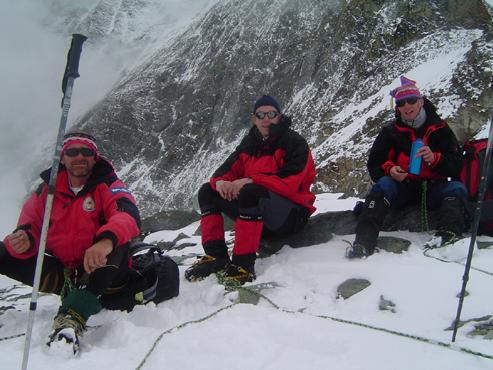
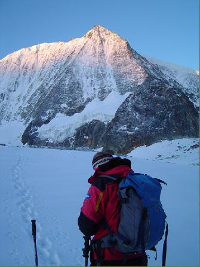

<!doctype html public "-//IETF//DTD HTML 2.0//EN"><html><head><meta http-equiv="imagetoolbar" content="no"><meta http-equiv="Content-Language" content="nl"><meta http-equiv="Content-Type" content="text/html; charset=windows-1252"><meta name="Generator" content="Microsoft FrontPage 5.0"><meta name="ProgId" content="FrontPage.Editor.Document"><title>Valpelline - Val d'Hérens 4</titl<!-- Matomo -->
<script type="text/javascript">
  var _paq = window._paq || [];
  /* tracker methods like "setCustomDimension" should be called before "trackPageView" */
  _paq.push(["setDocumentTitle", document.domain + "/" + document.title]);
  _paq.push(['trackPageView']);
  _paq.push(['enableLinkTracking']);
  (function() {
    var u="https://adsrv.innocraft.cloud/";
    _paq.push(['setTrackerUrl', u+'matomo.php']);
    _paq.push(['setSiteId', '51']);
    var d=document, g=d.createElement('script'), s=d.getElementsByTagName('script')[0];
    g.type='text/javascript'; g.async=true; g.defer=true; g.src='//cdn.innocraft.cloud/adsrv.innocraft.cloud/matomo.js'; s.parentNode.insertBefore(g,s);
  })();
</script>
<noscript><p></p></noscript>
<!-- End Matomo Code --></head>d><body bgcolor="#ffffff" link="#0066ff" vlink="#6633cc" text="#000000" topmargin=0 leftmargin=0 onmouseover="return true" onload="jh()"><script language="JavaScript" type="text/javascript"><!--
function ncm(){return false}function qp(){alert(unescape("Copyrights !  You are not allowed to download pictures - Het ophalen van afbeeldingen is verboden."));return false}function cn(){fg=event.button;if(fg==2||fg==3)qp()}function pq(e){return(e.which==3)?qp():true}vb=document.all;ls=document.getElementById;function jh(){if(document.images){for(zu=0;zu<document.images.length;zu++){if(vb){if(ls){document.images[zu].oncontextmenu=qp}else{document.images[zu].onmousedown=cn}}if(ls&&!vb){document.images[zu].onmouseup=ncm;document.images[zu].oncontextmenu=ncm}if(document.layers){document.images[zu].onmousedown=pq}}}}//--></script> <a name=top></a> <table border=0 cellpadding=0 cellspacing=0><tr><td></td><td></td><td></td><td></td><td></td></tr><tr><td width=9 height=9></td><td width=335></td><td width=11></td><td width=147></td><td width=4></td></tr><tr><td height=47></td><td width=497 height=47 colspan=4 rowspan=1 valign=top align=left> <table border=0 cellpadding=0 cellspacing=0><tr><td width=496 height=47 valign=top align=left bgcolor=#658c9a> <table border=0 cellpadding=0 cellspacing=0><tr><td width=3 height=3></td><td width=489></td><td width=3></td></tr><tr><td height=39></td><td width=489 height=39 valign=top align=left> <p align=center><center><font face="Arial" color=#ffffff size=3><B>Door Valpelline en Val d'Hérens, tussen Chamonix en Zermatt.</B></font><font face="Arial" color=#ffffff size=4><B><br></B></font><font face="Arial" color=#ffffff size=2><B>&copy; 2004 Peter De Smedt</B></font><font face="Arial" color=#ffffff size=4><B><br></B></font> </td><td></td></tr><tr><td height=3></td><td colspan=2></td></tr></table> </td></tr></table> </td></tr><tr><td height=4></td><td colspan=4></td></tr><tr><td height=34></td><td width=497 height=34 colspan=4 rowspan=1 valign=top align=left> <table border=0 cellpadding=0 cellspacing=0><tr><td width=496 height=34 valign=top align=left bgcolor=#c4cfd4> <table border=0 cellpadding=0 cellspacing=0><tr><td width=3 height=3></td><td width=489></td><td width=3></td></tr><tr><td height=26></td><td width=489 height=26 valign=top align=left> <p align=left><font face="Arial" color=#000000 size=3><B>Deel 4:&nbsp; </B></font><font face="Arial" size=2>Dinsdag 13/07/2004</font><font face="Arial" size=3><B><br></B></font> </td><td></td></tr><tr><td height=3></td><td colspan=2></td></tr></table> </td></tr></table> </td></tr><tr><td height=4></td><td colspan=4></td></tr><tr><td height=484></td><td width=497 height=484 colspan=4 rowspan=1 valign=top align=left> <table border=0 cellpadding=0 cellspacing=0><tr><td width=3 height=3></td><td width=489></td><td width=3></td></tr><tr><td height=476></td><td width=489 height=476 valign=top align=left> <p align=left><font face="Arial" color=#000000 size=2><B>Dag twee : Cabane de Chanrion naar Cabane des Dix, via 3 cols en 3 gletsjers&nbsp;: Cabane de Chanrion (2462 m) - Lac de Tsofeiret - Col de Lire Rose (3115 m) - Glacier de Lire Rose - Col du Mont Rouge (3325 m) - Glacier du Giétro - Col de Cheilon (3243 m) - Glacier de Cheilon - morene (P. 2977 m) - Cabane des Dix (2928 m). <br></B></font><font face="Arial" size=2> Op het eerste zicht niet zo een zware tocht, maar toch een beetje schrik van aangezien gisteren de twijfels zijn opgetreden.&nbsp; 's Morgens een goed ontbijtje gehad en als laatste groep vertrokken richting Cabane des Dix (de volledige uitrusting voor de eerste keer aandoen : gordel, stijgijzers, guetten.&nbsp; Marc had problemen met de gordel, Peter problemen met het vinden van zijn tweede guette; uiteindelijk alles in orde en kunnen vertrekken).&nbsp; De beklimming naar de eerste col ging vrij vlot, na een uurtje al de vorige groep ingehaald : deze groep liep met een franse gids en er waren een aantal personen die al problemen hadden met de eerste beklimming.&nbsp; Boven op de eerste col hadden we alle groepen al achter ons gelaten en moesten we zelf spoor trekken.&nbsp; Marin had een nieuw speelgoedje (GPS Garmin Etrex) en liep bijna volledig op GPS naar boven.&nbsp; Het weer was verslechterd en ondertussen was het al flink aan het sneeuwen en was de zichtbaarheid nul.&nbsp; Boven op de Col de Lire Rose (3115m) een kleinigheidje gegeten en op zoek gegaan naar de goede route.&nbsp; Normaal moesten we een honderdtal meter dalen tot op de volgende gletsjer, maar Marin wou zo hoog mogelijk blijven en had zijn GPS afgesteld op de volgende col : dat zullen we geweten hebben.&nbsp; Volgens ons was er lang geen pad of spoor meer en wij gingen recht naar boven.&nbsp; Als het dan nog in de sneeuw was, maar in een gemengd terrein (sneeuw, rotsen, morene) was dit een loodzware opdracht.&nbsp; Ik had het gevoel dat ik bij elke stap naar boven, twee stappen naar beneden gleed.&nbsp; Marin gaf dan nog commentaar dat een gemengd terrein toch wel wat moeilijker was dan al de rest en ondertussen maar op zijn GPS de rechtste weg naar boven aan het zoeken.&nbsp; Boven op de Col du Mont Rouge (3325m) had ik toch wel even op mijn adem getrapt, en dan te bedenken dat het maar over 200 meter stijgen gaat.&nbsp; <br></font> </td><td></td></tr><tr><td height=3></td><td colspan=2></td></tr></table> </td></tr><tr><td height=7></td><td colspan=4></td></tr><tr><td height=370></td><td width=493 height=370 colspan=3 rowspan=1 valign=top align=left> <div style="border-style: solid; border-width: 1"> </div> </td><td></td></tr><tr><td height=4></td><td colspan=4></td></tr><tr><td height=541></td><td width=497 height=541 colspan=4 rowspan=1 valign=top align=left> <table border=0 cellpadding=0 cellspacing=0><tr><td width=3 height=3></td><td width=489></td><td width=3></td></tr><tr><td height=533></td><td width=489 height=533 valign=top align=left> <p align=left><font face="Arial" color=#000000 size=2>Vervolgens wacht ons een passage over de Gletsjer du Giétro, een vlak voetbalplein van 3 km lang en 3 km breed tot de volgende col.&nbsp; Zonder problemen tot op de Col de Cheilon (3243m) geraakt, ondertussen blijft het maar sneeuwen en is de zichtbaarheid beperkt : geen zicht op de Grand Combin (spijtig), maar de volgende dag wordt ons wachten beloond.&nbsp; Op de Col is er nog een gedenkplaat voor een of andere Italiaanse premier die gevlucht is langs deze col naar Zwitserland, maar wij storten ons naar beneden in het zog van Marin.&nbsp; Als we van de gletsjer zijn, zeggen wij aan Marin dat hij mag doorgaan en dat wij zelf tot aan de hut zullen gaan.&nbsp; Het is immers nog vroeg op de dag en anders zijn we al voor de middag in de hut.&nbsp; We nemen onze tijd voor de afdaling en trekken de nodige foto's met de zelfontspanner.&nbsp; Aangekomen in de hut, drinken we er nog ene op het mooie terras, maar het zicht is maar beperkt.&nbsp; Links van de hut de Pas de Chèvres vanuit Arolla, recht voor ons de beklimming naar de Pigne d'Arolla (voor de volgende dag) en de Mont Blanc de Cheilon.&nbsp; Rechts van de hut de Col de Cheilon, waar wij twee uur na onze passage de volgende groepen zien passeren.&nbsp; We telefoneren ook even met het thuisfront om ze gerust te stellen, er was blijkbaar een zwaar ongeval gebeurd op de Mont Blanc.&nbsp; <br>De Cabane des Dix is een zeer mooie en grote hut, waar de groepen langs drie kanten naar toe kunnen komen : vanaf de Chanrion, vanaf Arolla en vanaf de Pigne d'Arolla (is niet zo gebruikelijk).&nbsp; Dit zorgt er ook voor dat de hut helemaal vol zit en van alle slag mensen zien passeren : een grote groep Belgische kinderen van 13 jaar, die met een paar begleiders vanuit Arolla gekomen zijn (de meeste kinderen lopen in korte broek en loopschoenen, wat niet zo aangewezen is want ondertussen heeft het al flink gesneeuwd) verder alle groepen (Zwitsers en Fransen vooral) die vanuit de Chanrion gekomen zijn.&nbsp; 's Middags is het grote feest in de eetzaal, het weer is niet zo goed dus iedereen blijft binnen en de groep kinderen zorgt voor de nodige ambience.&nbsp; We hebben nog even een gesprekje gehad met de begeleidster van de groep : zij maken deze tocht met een beperkt gedeelte van de volledige groep (een school uit de Vlaanders die de gebouwen van de CM mogen gebruiken), slapen één nacht in de hut en gaan morgen terug naar Arolla via de Pas de Chèvres.&nbsp; Voorts nog wat boekjes gelezen, geslapen, gewassen (er was water om te wassen, niet om te drinken; maar 's morgens was het water op) en ons klaargemaakt voor het avondeten.<br></font> </td><td></td></tr><tr><td height=3></td><td colspan=2></td></tr></table> </td></tr><tr><td height=4></td><td colspan=4></td></tr><tr><td height=370></td><td width=493 height=370 colspan=3 rowspan=1 valign=top align=left> <div style="border-style: solid; border-width: 1"> </div> </td><td></td></tr><tr><td height=7></td><td colspan=4></td></tr><tr><td height=167></td><td width=497 height=167 colspan=4 rowspan=1 valign=top align=left> <table border=0 cellpadding=0 cellspacing=0><tr><td width=3 height=3></td><td width=489></td><td width=3></td></tr><tr><td height=158></td><td width=489 height=158 valign=top align=left> <p align=left><font face="Arial" color=#000000 size=2>Het avondeten was schitterend : een aperitiefje, goede stevige soep en een heerlijke hoofdschotel.&nbsp; We hadden al een biertje of twee op en ineens komt Marin met een fles wijn voor de kaasschotel als dessert.&nbsp; Was eigenlijk een beetje te veel van het goede, maar Marin had gelijk : bij goed eten hoort een flesje wijn en deze keer moesten wij niet betalen.&nbsp; Marin had al gehoord dat de Cabane des Dix een hele goed hut was, met vriendelijke gardiens en dat was zeker niet gelogen.&nbsp; Na het eten was het al bijna tijd voor te gaan slapen (in de meeste hutten was het eten pas om 18.30h of zelfs om 19.00h, als er in twee groepen gegeten werd; dus als we van tafel kwamen was het meestal tijd om te gaan slapen (rond 21.30h ten laatste). <br></font> </td><td></td></tr><tr><td height=3></td><td colspan=2></td></tr></table> </td></tr><tr><td height=7></td><td colspan=4></td></tr><tr><td height=446></td><td width=335 height=446 colspan=1 rowspan=1 valign=top align=left> <div style="border-style: solid; border-width: 1"> </div> </td><td></td><td width=151 height=450 colspan=2 rowspan=2 valign=top align=left> <table border=0 cellpadding=0 cellspacing=0><tr><td width=3 height=3></td><td width=143></td><td width=3></td></tr><tr><td height=442></td><td width=143 height=442 valign=top align=left> <p align=left><font face="Arial" color=#000000 size=2>Om de traditie van de vorige hut in ere te houden, was ik 's avonds mijn drinkbus kwijt en ben ik druk op zoek gegaan naar een vervangbus.&nbsp; <br>'s Morgens bij het opruimen is toch boven water gekomen en was dit probleem ook weer opgelost : ik moest duidelijk nog in het ritme komen van de tocht, alle dagen iets kwijtgespeeld en alle dagen op mijn adem getrapt; maar vanaf de Cabane des Dix ging alles beter : de inloopdagen zijn voorbij, geen problemen meer met de conditie, niets kwijtgespeeld en goed weer.&nbsp; <br></font> </td><td></td></tr><tr><td height=3></td><td colspan=2></td></tr></table> </td></tr><tr><td height=4></td><td colspan=2></td></tr><tr><td height=11></td><td colspan=4></td></tr><tr><td height=31 style="border-top: 2px solid #658C9A"></td><td width=497 height=31 colspan=4 valign=top align=left style="border-top: 2px solid #658C9A"> <table border=0 cellpadding=0 cellspacing=0><tr><td width=3 height=3></td><td width=489></td><td width=3></td></tr><tr><td height=22></td><td width=489 height=22 valign=top align=left> <p align=left><font face="Arial" color=#000000 size=2><B>&lt;- <a target="_self" href="vlg-valp2004-c.html">Deel 3</a>&nbsp;&nbsp;&nbsp;&nbsp;&nbsp;&nbsp;&nbsp;&nbsp;&nbsp;&nbsp;&nbsp;&nbsp;&nbsp;&nbsp;&nbsp;&nbsp;&nbsp;&nbsp;&nbsp;&nbsp;&nbsp;&nbsp;&nbsp;&nbsp;&nbsp;&nbsp;&nbsp;&nbsp;&nbsp;&nbsp;&nbsp;&nbsp;&nbsp; </B></font> <font face="Arial" size="2"> <a href="file:///C:/Documents%20and%20Settings/Joris/Mijn%20documenten/My%20Webs/Hutten/index.html" target="_top"> Startpagina (Home)</a><b>&nbsp;&nbsp;&nbsp;&nbsp;&nbsp;&nbsp;&nbsp;&nbsp;&nbsp;&nbsp;&nbsp;&nbsp;&nbsp;&nbsp;&nbsp;&nbsp;&nbsp;&nbsp;&nbsp;&nbsp;&nbsp;&nbsp;&nbsp;&nbsp; <a target="_self" href="vlg-valp2004-e.html">Deel 5</a>&nbsp; -&gt;<br></b></font> </td><td></td></tr><tr><td height=3></td><td colspan=2></td></tr></table> </td></tr></table> <a name=bottom></a> <p>&nbsp;</p><p>&nbsp;</p></body></html>